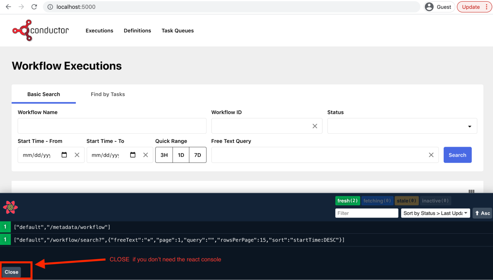

Running via Docker Compose¶
In this article we will explore how you can set up Netflix Conductor on your local machine using Docker compose. The docker compose will bring up the following: 1. Conductor API Server 2. Conductor UI 3. Elasticsearch for searching workflows
Prerequisites¶
- Docker: https://docs.docker.com/get-docker/
- Recommended host with CPU and RAM to be able to run multiple docker containers (at-least 16GB RAM)
Steps¶
1. Clone the Conductor Code¶
$ git clone https://github.com/Netflix/conductor.git
2. Build the Docker Compose¶
$ cd conductor
conductor $ cd docker
docker $ docker-compose build
Note: Conductor supplies multiple docker compose templates that can be used with different configurations:¶
| File | Containers |
|---|---|
| docker-compose.yaml | 1. In Memory Conductor Server 2. Elasticsearch 3. UI |
| docker-compose-dynomite.yaml | 1. In Memory Conductor Server 2. Elasticsearch 3. UI 4. Dynomite Redis for persistence |
| docker-compose-postgres.yaml | 1. In Memory Conductor Server 2. Elasticsearch 3. UI 4. Postgres persistence |
| docker-compose-prometheus.yaml | Brings up Prometheus server |
3. Run Docker Compose¶
docker $ docker-compose up
Once up and running, you will see the following in your Docker dashboard:
- Elasticsearch
- Conductor UI
- Conductor Server
You can access all three on your browser to verify that it is running correctly:
Conductor Server URL: http://localhost:8080/swagger-ui/index.html?configUrl=/api-docs/swagger-config

Conductor UI URL: http://localhost:5000/

Potential problems¶
- Not enough memory
- You will need at least 16 GB of memory to run everything. You can modify the docker compose to skip using Elasticsearch if you have no option to run this with your memory options.
- To disable Elasticsearch using Docker Compose - follow the steps listed here: TODO LINK
- Elasticsearch fails to come up in arm64 based CPU machines
- As of writing this article, Conductor relies on 6.8.x version of Elasticsearch. This version doesn't have an arm64 based Docker image. You will need to use Elasticsearch 7.x which requires a bit of customization to get up and running
- Elasticsearch remains in Yellow health
- When you run Elasticsearch, sometimes the health remains in Yellow state. Conductor server by default requires
Green state to run when indexing is enabled. To work around this, you can use the following property:
conductor.elasticsearch.clusteHealthColor=yellowReference: Issue 2262
- When you run Elasticsearch, sometimes the health remains in Yellow state. Conductor server by default requires
Green state to run when indexing is enabled. To work around this, you can use the following property: